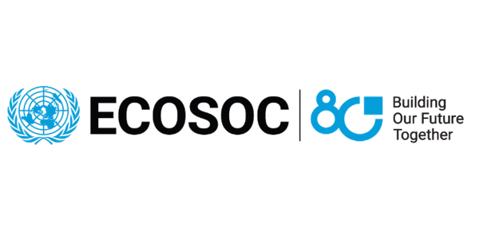

UN Consultative
Global

United Nations ECOSOC
New York, USA · United Nations
Special Consultative Status
Official consultative status granting APSCC direct participation in UN Economic and Social Council deliberations, High-Level Political Forums, and multilateral policy summits.